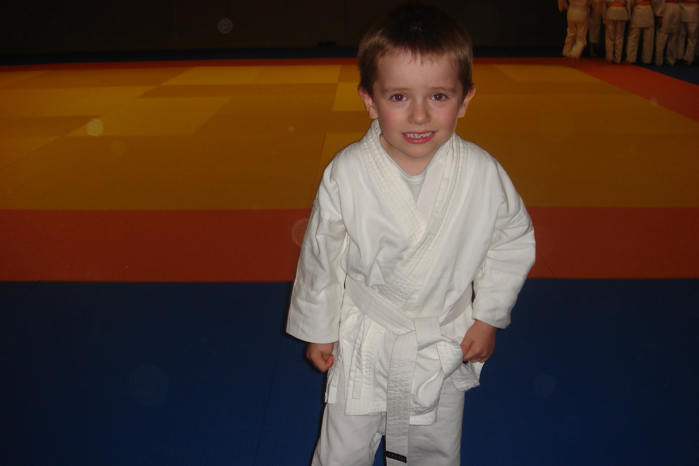
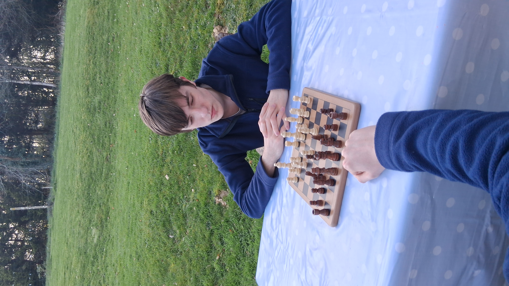

Étudiant en classe préparatoire intégrée d’école d’ingénieur à l’ENSIBS, je souhaite intégrer le parcours Ingénieur Cyberdéfense.
Motivé par l’informatique et la sécurité des systèmes, je développe mes compétences en programmation et en analyse technique.
| Domaine | Logiciel | Utilisation |
|---|---|---|
| Bureautique | Word | Compte rendu, CV |
| Excel | Calculs, graphiques, tableaux | |
| PowerPoint | Diaporama | |
| Programmation | Python | Projets, exercices |
| Langages C et C++ | TP | |
| HTML, CSS, JavaScript | Création de sites webs | |
| SQL | Gestion de base de données SQL | |
| Système d'exploitation | Windows | Usage quotidien |
| Linux | TP ENSIBS |
Base des fusiliers marins et commandos : Découverte du fonctionnement d’un environnement professionnel militaire et observation des missions liées à la sécurité et à l’organisation.
Stage d'observationProgrammation et développement d’un robot LEGO, capable de s’orienter, éviter des obstacles et se diriger vers une source de lumière.
Développement d’un site internet résumant mon parcours et mes expériences intégrant différentes images de mes compétences.


 GILET Timothé
GILET TimothéContactez-moi sur Linkedin : Contactez-moi